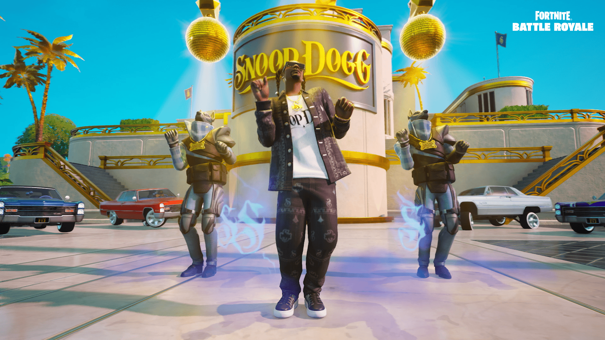

Várva várt Chapter 2 Remix!
Az általad ismert sziget visszatér, újrakeverve és újragondolva, heti helyszínekkel és zsákmánycseppekkel, amelyeket a 2. fejezet korai játékmenetének legjobbjai és a történelem legnagyobb zenei ikonjai ihlettek. Ebben az időben visszatekerve Snoop DO-double-G vezeti az Ügynökséget, a rapisten, Eminem üzletet nyit a Grottoban, a hip-hop hercegnő, Ice Spice igényt tart a Shark Islandre, a remix pedig a fináléban ünnepel és tiszteleg a legenda és ikon, a Juice WRLD. Nyomja meg a lejátszást, növelje a hangerőt, és nyissa ki a trezort a Fortnite Battle Royale 2. fejezetének remixében !
